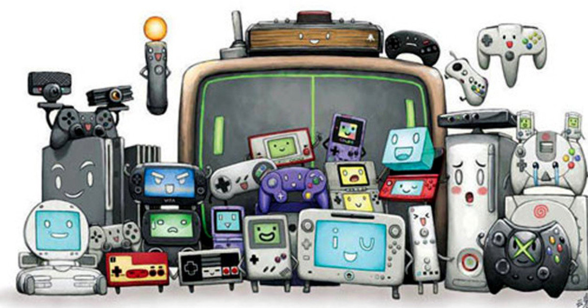

Os jogos eletrônicos evoluíram tanto desde quando foram inventados, e esta evolução não segue uma linha reta já que há vários fatores externos como também várias empresas e segmentos que estão envolvidos nessas mudanças tecnológicas.
Os primeiros jogos não utilizavam nem mesmo imagens, apenas textos, já que os jogos precisavam acompanhar a evolução dos aparelhos eletrônicos. Mas se resumir em três grandes grupos temos: os jogos de arcade, os consoles caseiros e os mobiles.
